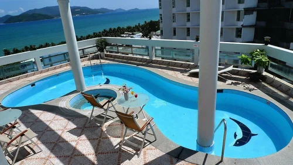
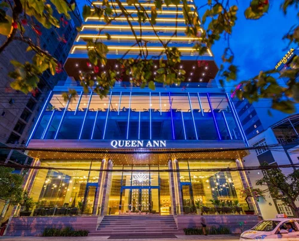
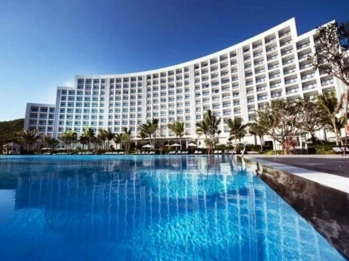

| 
Отель Asia Paradise идеально расположен в центре Нячанга, всего в 2 минутах ходьбы от песчаного пляжа и моря. К услугам гостей открытый бассейн и бесплатный Wi-Fi.Расстояние от отеля Asia Paradise до международного аэропорта Камрань составляет 34 км.Номера с деревянным полом и большими окнами оснащены кондиционером, телевизором с кабельными/спутниковыми каналами и мини-баром. В ванных комнатах в номерах установлены отдельные ванна и душ.Сотрудники экскурсионного бюро помогут организовать однодневные поездки и экскурсии по достопримечательностям. В отеле также предоставляются услуги прачечной и круглосуточной стойки регистрации. Гидромассажной ванной и сауной можно воспользоваться за дополнительную плату.В уютном ресторане, расположенном на 1 этаже, подают разнообразные блюда из свежих морепродуктов, а также блюда европейской и азиатской кухни. |
| 
Отель Queen Ann Nha Trang расположен в Нячанге, в 800 м от центра парусного спорта Вьетнама. К услугам гостей открытый бассейн, ресторан и бар. На всей территории предоставляется бесплатный Wi-Fi.Расстояние до ночного рынка Нячанга и пляжа Нячанг составляет 900 м. Пагода Лонг-Сон и туристический пирс залива Нячанг находятся в 4 км от отеля Queen Ann Nha Trang, а башня Понагар — в 4,9 км. Расстояние до международного аэропорта Камрань составляет 24 км. За дополнительную плату организуется трансфер от/до аэропорта.В распоряжении гостей телевизор с плоским экраном и кабельными каналами, а также док-станция для iPod. В числе удобств чайник. В распоряжении гостей собственная ванная комната. Гостям предоставляются халаты, тапочки и бесплатные туалетно-косметические принадлежности.На круглосуточной стойке регистрации можно воспользоваться камерой хранения багажа. Гости могут бесплатно посещать фитнес-центр. Кроме того, гости могут заказать массажные процедуры в спа-центре или бесплатно посетить бассейн.В ресторане Royal подают блюда местной и интернациональной кухни, а в лобби-лаундже можно заказать легкие закуски. По прибытии гостям бесплатно предоставляется приветственный напиток и фрукты. |
| 
К услугам гостей 5-звездочного курортного спа-отеля Vinpearl Nha Trang Bay просторные номера с кондиционером и бесплатным Wi-Fi. Курортный отель окружен пышным частным садом с панорамным бассейном с видом на пляж. На территории работают рестораны высокой кухни и спа-центр.Курортный отель Vinpearl Resort & Spa Nha Trang Bay находится в 3 км от дворца Бао-Дай и в 3,2 км от Института океанографии. и в 3 км от гольф-клуба Vinpearl Nha Trang. Расстояние до аэропорта города Нячанг составляет 24 км. Курортный спа-отель Vinpearl Resort & Spa Nha Trang Bay находится всего в 10 минутах езды на лодке от Нячанга.Все номера отеля оснащены сейфом, мини-баром и телевизором с плоским экраном и кабельными каналами. В числе удобств гостиный уголок и собственная ванная комната с ванной, душем, феном и бесплатными туалетно-косметическими принадлежностями. В распоряжении гостей каждой виллы отдельная обеденная/гостиная зона, кухня и собственный бассейн.На круглосуточной стойке регистрации можно обменять валюту, заказать экскурсии и билеты, а также воспользоваться услугами консьержа. Кроме того, на территории есть игровая комната и спа-центр Akoya, где можно заказать спа-процедуры.В клубе курортного отеля сервируют ежедневный завтрак «шведский стол». Также здесь подают различные блюда в течение всего дня, напитки перед ужином и канапе. |